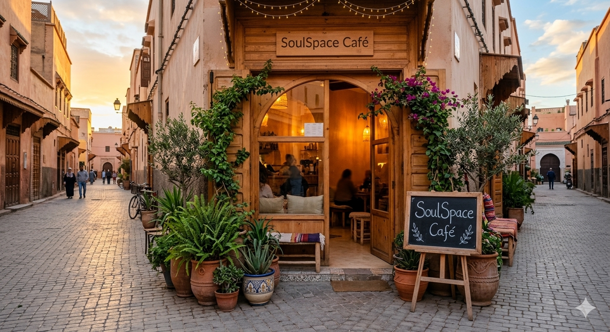

How a dream became a sanctuary for souls
SoulSpace Café was born from a simple observation: we've never been more connected, yet we've never felt more alone. Our founder, Bilal Wafae, noticed how people would sit together in cafés, yet remain absorbed in their screens, disconnected from the beauty of the moment and the people around them.
In 2024, after years of traveling and experiencing different café cultures around the world, Bilal returned to his hometown of Mohammedia with a vision: to create a space that would invite people to pause, breathe, and reconnect with what truly matters.
"I wanted to build more than a café. I wanted to create a movement—a quiet rebellion against the tyranny of constant connectivity."

Bilal Wafae, Founder & Soul Curator
Bilal Wafae is not just a café owner—he's a soul curator, a mindfulness advocate, and a believer in the transformative power of intentional spaces. Growing up in Mohammedia, Bilal always felt a deep connection to the city's coastal calm and natural beauty.
After spending years working in the fast-paced tech industry in Casablanca, Bilal experienced firsthand the toll of digital overload. Burnout, anxiety, and a sense of disconnection from himself led him on a journey of self-discovery through meditation, minimalism, and mindful living.
During a sabbatical year, he traveled to Japan, where he was deeply inspired by the concept of ma (間)—the Japanese appreciation for empty space and pauses between moments. He also spent time in Scandinavian countries, learning about hygge and lagom— the art of cozy contentment and balanced living.
These experiences planted the seed for SoulSpace Café. Bilal envisioned a place where:
Today, Bilal can often be found in the café, brewing ceremonial matcha, recommending books, or simply sitting in silence with guests, honoring the power of shared presence.
At SoulSpace, we believe in the radical act of being present
We encourage guests to put their phones away and immerse themselves in the present moment. True connection begins when we disconnect from digital distractions.
In a world obsessed with speed and productivity, we champion slowness. Savor your coffee. Read a chapter. Stare out the window. There's no rush here.
We foster real conversations and genuine human connection. Whether with a friend, a stranger, or yourself, meaningful interaction is at the heart of SoulSpace.
Surrounded by plants and natural elements, our space is designed to ground you. Nature has a way of calming the soul—we bring that indoors.
From the books we curate to the coffee we brew, everything is chosen with intention. We believe in quality over quantity, always.
SoulSpace is a sanctuary for introspection. Whether through journaling, meditation, or quiet reflection, we support your journey inward.
To preserve the peaceful atmosphere we've worked so hard to create, we kindly ask all guests to respect the following guidelines:
Please keep phones on silent and avoid taking calls inside the café. If you must take an urgent call, we have a designated quiet phone zone outside.
Certain areas of the café are designated as screen-free zones. Look for the gentle signage marking these sacred spaces for reading and reflection.
We maintain a library-like atmosphere. Please speak in hushed tones and be mindful of others seeking peace and quiet.
While we love when you share your experience, we encourage you to be here first, post later. Experience the moment before documenting it.
"Thank you for helping us maintain this sanctuary of calm. Your cooperation allows everyone to enjoy the peace they came here to find." — Bilal
We source locally whenever possible, use eco-friendly packaging, and compost our organic waste. Caring for your soul includes caring for the planet.
Everyone is welcome at SoulSpace, regardless of background, beliefs, or lifestyle. We're a judgment-free zone where all souls can find peace.
We're more than a café—we're a community. We host book clubs, mindfulness workshops, and creative gatherings to bring people together meaningfully.
From our ceremonial-grade matcha to our handpicked book collection, we never compromise on quality. You deserve the best.
Experience what makes SoulSpace special. Visit us in Mohammedia and discover your sanctuary.